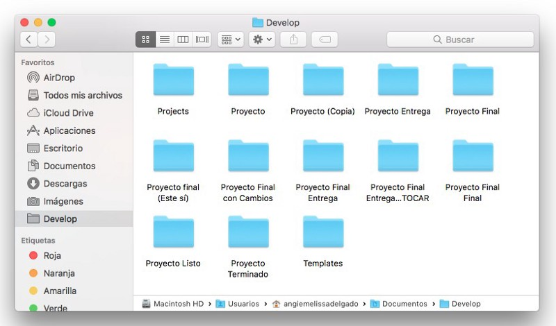

Una breve introduccion
En la actualidad, la industria del software juega un papel cada vez más importante para la economı́a global. El software ha transformado los procesos de control
de la mayorı́a de los servicios de los cuales dependemos. Asi tambien cada dı́a surgen más y mejores tecnologı́as y con ellas novedosas aplicaciones, generando nuevos retos para los implicados en los procesos de software.
Tambien uno de los retos a los que se enfrentan los desarrolladores de software es generar productos eficientes y de calidad sin sacrificar tiempo o costos.
Este objetivo sólo se alcanza si los actores involucrados en tal proceso pueden disponer de toda la información relacionada con el proyecto
Es asi como nacen los famosos Sistemas de control de versiones (SVC), los cuales nos ayudan al proceso de desarrollo del software en forma colaborativa.
¿Que son los Sistemas de control de versiones y por que amarlos?
La vida de un desarrollador de software se encuentra dividido por un gran hecho: el antes y el después de conocer los sistemas de control de versiones.

Es muy probable que en algún momento de nuestras vidas nuestra carpeta de documentos luciera como la de la imagen y nos haya tocado recurrir a tener muchas copias de nuestros proyectos, copias que requerían de toda nuestra creatividad para nombrarlas con etiquetas super útiles para poder reconocer cuál era nuestro ansiado “proyecto final”.
Tiempo después por algún accidente del destino conocemos los sistemas de control de versiones y no podemos negarlo, nuestras vidas cambian y entramos a una era donde todo es mucho más bonito: el después.
Si, si muy bonito todo pero… ¿Qué es control de versiones?
El control de versiones es un sistema que registra los cambios realizados sobre un archivo o conjunto de archivos a lo largo del tiempo de tal manera que sea posible recuperar versiones especificas más adelante.
prueba
texto de lexer